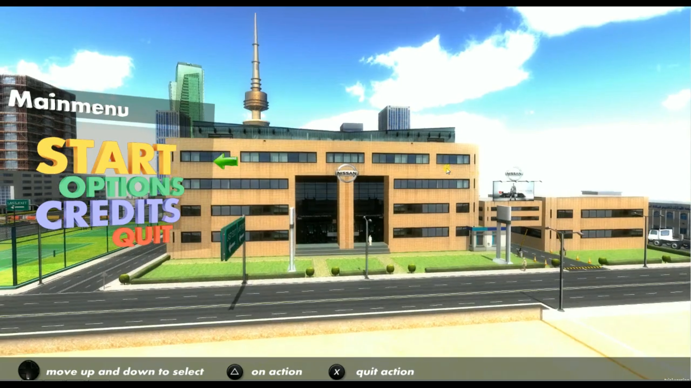

Unity Application Development
Developed the core real-time application and integrated the systems required to deliver a complete interactive driving experience.
Driving Simulation · Unity 3D · PC
An immersive virtual driving experience developed for the NISSAN Driving Institute at KidZania, Kuwait, enabling young learners to practise essential driving skills in a safe and controlled 3D environment.
Project Overview
The NISSAN Driving Simulator was designed as an interactive learning experience where young users could engage with a realistic virtual road environment and practise fundamental driving behaviour without the risks of real-world traffic.
The simulation combined vehicle controls, road systems, traffic behaviour and interactive scenarios into a focused driving experience suitable for a public, high-throughput installation environment. The objective was to make the interaction immediately understandable while maintaining a convincing sense of driving and spatial awareness.
My Role / Contribution
Developed the core real-time application and integrated the systems required to deliver a complete interactive driving experience.
Implemented vehicle input and response systems to create an intuitive connection between the physical controls and the virtual car.
Integrated the road environment, driving routes and surrounding elements to support clear navigation and believable spatial context.
Worked with gameplay and simulation logic to support traffic situations and structured driving scenarios for the learning experience.
Developed user-facing flows and feedback designed to keep the experience accessible for young participants in a public installation.
Optimised the application for stable real-time performance on the target PC hardware used by the simulator installation.
Key Features
Responsive driving input translated into real-time vehicle behaviour inside the Unity simulation.
A structured 3D environment designed to provide clear driving routes and recognisable road context.
Traffic situations and environmental cues supported the practice of observation, decision-making and road awareness.
Driving interactions were organised around guided situations rather than an unrestricted open-world experience.
The experience was designed for repeatable sessions, simple onboarding and reliable operation in an interactive venue.
Unity scene, asset and runtime considerations were applied to maintain a smooth and consistent experience on the target hardware.
Project Gallery



Technologies Used
Project Outcome
The NISSAN Driving Simulator transformed core driving concepts into an accessible interactive experience, allowing young participants to engage with vehicle control, road awareness and simulated traffic situations before encountering real-world driving conditions.